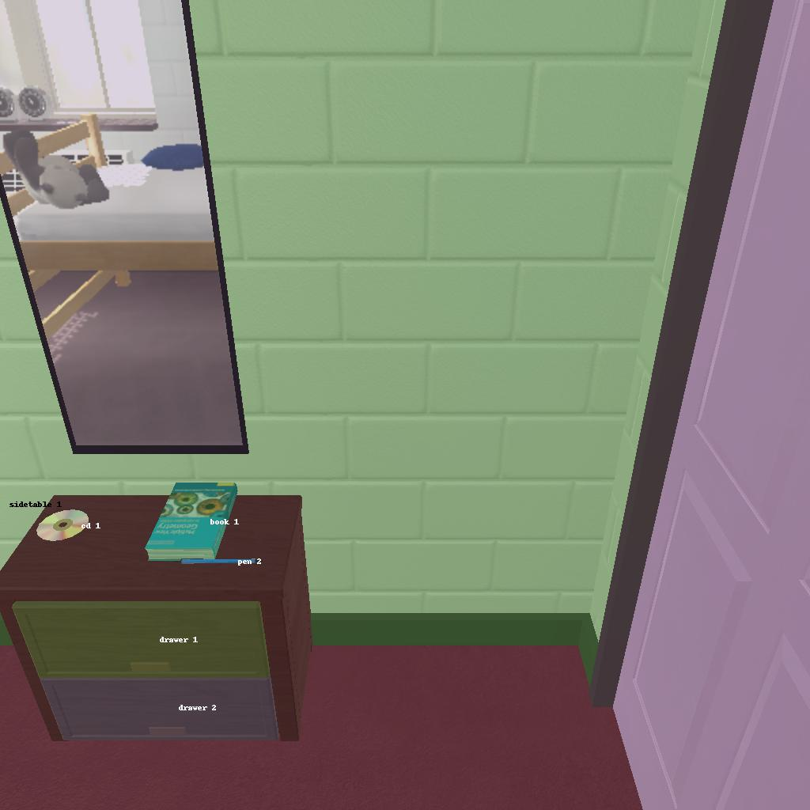

---------------------------------------------------------task: 8---------------------------------------------------------
--------------------------------------------------------------------------------------------------------------------------------------------------------------------
--------------------------------------------------------------------------------------------------------------------------------------------------------------------
Step:--------------------------------------------------------------------------11-------------------------------------------------------------------------------
----------------------------------------
VLM Prompt:
Image1:
Image2:
**Instruction**
1. Analyze the provided image to identify all visible household objects, focusing on those relevant to the task description "put some laptop on desk."
2. Use the analysis of the image and the task hint "The agent must find an object of the desired type, pick it up, find the correct location to place it, and put it down there." to answer the question: what is the most reasonable action in the choices for the task description "put some laptop on desk"?
4. Decide and write the answer using the template: The answer is: (i): , where i is the real number. If there is no desired object in the image, search every place based on **Initial Observation** to find the object. And if no one is exactly correct, choose a similar answer.
**Initial Observation**
You are in the middle of a room. Looking quickly around you, you can see bed (1), garbagecan (1), desk (1), sidetable (1), drawer (1-5), laundryhamper (1)
**Answer Choices**
(1): go to bed 1
(2): go to garbagecan 1
(3): go to desk 1
(4): go to sidetable 1
(5): go to drawer 2
(6): go to laundryhamper 1
(7): go to drawer 3
(8): go to drawer 4
(9): go to drawer 5
(10): close drawer 1
(11): take book 1 from drawer 1
(12): take cd 1 from drawer 1
(13): take pen 2 from drawer 1
(14): examine drawer 1
**Answer**
Let's think step by step by following the instructions.
----------------------------------------
----------------------------------------
Original Response:
First, we analyze the image and see if there is a laptop visible. No laptop is seen on the sidetable or visible in the reflection of the mirror. Now, considering the task description "put some laptop on desk," we need to find a laptop first.
According to the initial observation, there are several drawers and a desk in the room. Since laptops are usually kept on desks or sometimes inside drawers when not in use, the most reasonable action would be to search the desk or the drawers.
The answer is: (3): go to desk 1, as this is the most logical place to start looking for a laptop in a household setting. If the laptop is not on the desk, the next reasonable actions would be to search the drawers.
----------------------------------------
----------------------------------------
>>> Refine Original VLM Response and Get Pure Action: go to desk 1, as this is the most logical place to start looking for a laptop in a household setting
----------------------------------------
-----------------------------------------------------------------
Running time: 10.605842351913452 seconds
Total Money: 3.496239999999998
-----------------------------------------------------------------
-----------------------------------------------------------------
Text Observation:Nothing happens.
-----------------------------------------------------------------
UNSUCCEED